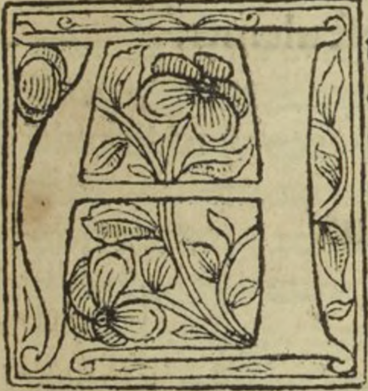
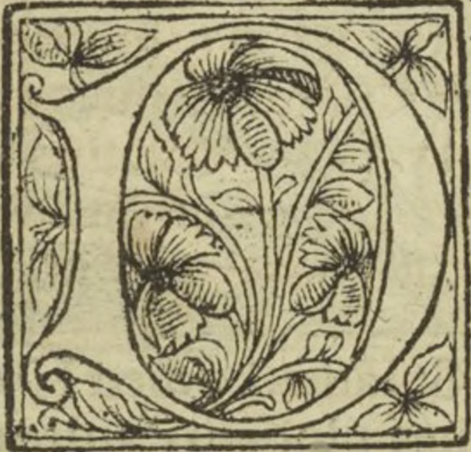
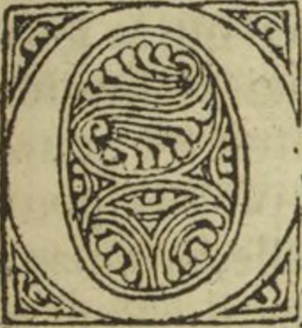
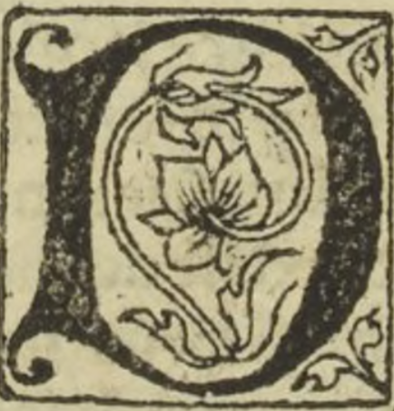
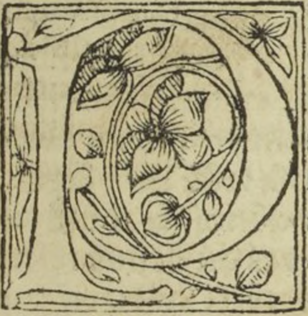

Le grand Olympe des Histoires poëtiques du prince de poësie Ovide Naso en sa Metamorphose
Oeuvre authentique, & de hault artifice, pleine de honneste recreation, Traduyct de latin en françoys
Ovide (0043 av. J.-C.-0017).
Le dixiesme livre du grant Olympedes histoires Poetiques.
Le mariage de Orpheus avec Eurydice lequel en chantant la tira des enfers.
ux nopces de Iphis et Ianthe. Le dieu Hymen fut assis avecques plusieurs autresdieux et deesses. Et quant Hymense partit, par l’air s’envolla grant erre en Cyconie, ousemons >de par Orpheus qui devoit espouser Eurydice. A ces nopces vint sans bonheur apporter ety donna signe de douleur advenir, et de male fortune comme je vous diray. Au printemps s’en alloit l'espouse novelle esbatant ung jour nudz piedz en ung préplain d’herbes verdoyans, et illecung pasteur bel et gaillart nomme Aristeus veit la belle, laquelle il requist tantost de son amour Mais icelle a luy nese voulut accorder ne habandonner pour priere ne requeste qu’il luy sceust faire, car trop et de bon cueur aymoit son nouvel espoux Orpheus ains pour de luy eschapper se mist a la fuyte et celluy lasuyuit, mais ainsi que la belle Eurydice fuyoit elle marcha dessus ung serpent venimeux qui la mordit environ le talon dont elle mourut. Quant Orpheus sceut que par soubdaine deffortune avoit perdu sa femme et espouse, il se complaignit et se doulousa tant que trop long et trop ennuiable seroit a le racompter. Et quant par le monde l’eust longuement plouree en enfer voulut descendre et aller veoir st’il pourroit ravoir et recouvrer samye et se a ce pourroit mouvoir les infernaulx. Il tenoit sa harpe entre ses bras et en touchoit les cordes :et de la bouche se print a chanter telle chanson.
La chanson de Orpheus aux enfers.
Ieulx infernaulx en tenebres regnans
En la chartre plaine d’obscurite
Ouvous estes tout le monde tenans
A cesubmise est toute humanité
Pour essaier vostre crudelité
Et regarder vostre gouvernement
Pas en ce lieune mesuis transporté
Eurydice demande seulement,
Quant le serpent tellement la blessa
Qu’elle mourut et vint avecques vous
Si asprement mon cueurse courroucea
Quej’ensouffry plus que mortel courroux
Ma femme estoitj’estoie son espoux
Je viens icy succumbé de tourment
Pour vous offrir une requeste a tous
Eurydice demande seulement.
Jadis Pluto Proserpine ravit
Par feu d’amours,et ceans la bouta
Mais toutesfois quant voz tormens y vit
Point esbahy ne suis s’elle doubta,
Et lesuisseur que ceste grande doubte a
Mon espouse,si vous pry doulcement
Escoutez moy, se onc homme on escouta
Eurydice demande seulement.
Quant maintenant vous me la baillerez
Pour demener avec moy train d’amours
Rien n’y perdrez puis que vous la raurez
Finablement, mais qu’elle ait faist son cours
Car tous humains en la fin de leurs jours
Viennent ceans a vostre jugement
Mais je vous pry que me donnez secours
Eurydice demande seulement.
Rpheus devant l’infernal manoir, si doulcement chanta que pour la melodieuse te du son de sa voix ensemble de sa harpe : les ames tristes qui la estoient en oublierent leurs peines. Tantalus en oublia sa soif, Ixion qui pres de luy estoit en laissa la roe reposer. Sisyphus mist jus la roche qui le travailloit. Et Ticyus laissa a donner aux voultours son gisier a rongier, et les Belidiennes laissans la fontaine a espuiser mirent jus leurs cribles. Et severitable est la renommee que ce me faist acroire et entendre, les Eumenidiennes que oyoient la doulceur de la harpe ploroient de Orpheus, ce que oncques paravant n’estoit advenu ne peu advenir. La royne Proserpine ne se povoit abstenir de larmoyer : le roy d’enfer ne povoit par nulle maniere escondire à Orpheus chose qu’ilz luy demandast. Si fut Eurydice appellee qui estoit en la valee umbreuse avec celles qui venues estoient nouvellement. Lors apparut Euridice laquelle alloit clochant par la playe quelle avoit receue ou pied par le serpent. Moult fut Orpheus joyeulx quant venir la vit. Elle luy fut rendue par tel convenant que il ne se retornast ne regardast derriere luy jusques a ce q’uelle fust totalement hors des tormens infernaulx et qu’il allast devant et elle le suvuroit derriere ou autrement jamais n’enystroit. Lors parung sentier moult roide et estroit et plain de tenebreuse obscurité et forvoyable chemin lung devant et l’autre apres se mirent en la voye Orpheus et samve. Tant cheminerent que ja estoient pres tout dehors du pourpris infernal, quant Orpheus qui d’amour estoit espris desirant de veoir samye : et doubtant qu’elle ne le suyuist se retourna pour elle regarder. Et incontinent elle s’esvanouyst de ses yeulx et s’en retourna en enfer. Orpheus tendit ses mains qui retenir la cuida, mais riens ne print forsvent, Et ainsi se partit Eurydice de son amy et mourut de seconde mort, mais de luy ne se peut plaindre, fors de trop aymer. Le dernier salut luy rendit que a peine l’entendit Orpheus. Forment se plaignoit de la seconde mort de samye, et voulut retourner pour trouver la mort, mais la porte trouva fermee. Et le portier qui la gardoit luy retarda son chemin et si luy dist que jamais recouvrer ne la pourroit. Quant Orpheus vit que plus entrer n’y pourroit,sur la rive du fleuve infernal fut sept jours plourant pour laseconde mort de samye etpour la perte di celle, sans manger et sans boyre vivoit luy sostenant de son dueil. Moult tenoit les dieux d’enfer mauvais et felons qui samye ainsi detenoient. Puis s’eu retourna Orpheus et trois ans se tint sans femme et sans chamberiere fuyant toute amour femenine, et met tant toutes choses en refus et en desdaing, Ce non obstant plusieurs damoiselles l’aymerent qui en luy peu d’amour conquirent, Car jouyr n’en peurent, Il ne les daignoit ouyr dont moult de luy se plaignoient.
La deploration du Poete Orpheus pour avoir perdue samye.
Effus ung tertre en ungchamp plain d’herbe verdoyant ou point d’umbre navoit s’assist Orpheus puis print sa harpe de laquelle il fist les cordes resonner par grande armonie. Lors vindrent environ luy pour leumbroier arbres de diverses manières qui pour prindrent la placequant la doulceur ouyrent du melodieux son. A cest assemblement vindrent arbres portans fruitz de diverses sortes comamandiers, lauriers, nesfliers, corneilliers :etmeuriers, chesnes, fresnes, esrables peschiers, genestriers, cerisiers, pruniers et aultres arbres perdurables de verdeur. Si y vindrent figuiers :sapinsetles arbres qui le basme portent. Encore y vindrent oliviers, aubespins et plusieurs aultres arbres portant noix. Le palme et le pin y furent. Cybelle y amena Athys qui fut muéen pin et vint aussi avec luy le cypres qui jadis avoit esté enfant et nouvellement estoit mué en ung arbre, moult l’aymoit Phebus tandis qu’il estoit vif.
La fin de Orpheus souverain harpeur.
Endant que le poete de Thrace Orpheus par le doux chant deson harpe armonieuse delectoit les arbres les bestes et les pierres, vecy venir en grand multitude les femmes de Thrace que faisoient les bacchanalles, et quant eurent commencé a veoir Orpheus. Une d’elles toute eschevelee va dire. Vecy le despriseur des femmes. Et en ce disant lança ung dart, mais pas ne le bleça car le dart fut retenu par leson, l’aultre luy rua en lieu de dart une grande pierre, Mais par la doulce melodie du chant cheut celle pierre devant les piedz d’Orpheus ainsi come pour se humilier et mercy prier. A donc doubla la forcenerie des faulces femmes plaines de ire, quant elles virent les pierres ressortir parla doulceur de son instrument. Lors firent entre elles crieries et noises et sonnerent buccines pour amortir et amoindrir le son de la melodie de son harpe, affin que riens ne le ouyst, qui s’en peust esmouvoir tant que on ne eust peu ouyr tonner. Puis luy getterent espessement pierres qui premieres du sang du Poete rougirent, car de riens ne le deporterent puis que le doulx chant de sa harpe plus ne ouyrent, ains luy firent du pis quelles peurent, si comme celles qui le hayoient mortellement, et qui avoient les cueurs plains de dire et d’enuie. Oyseaulx, serpens, et sauluaigine laisserent Orpheus seul qui n’agueres environ luy avoit attraist et assemblé, Celles qui grever le vouloient le rassaillirent et abbatirent, Et sans mercy les desvoyees retournerent legierement vers le Poete qui tendoit les bras en criant mercy se aulcun fust qui le ouyst, mais pour riens qu’il dist il ne pouvoit esmouvoir les folles a ce que pitiéne mercy eussent de luy, ains le meuldrirent et tuerent a leur grand reproche. Haa dieu par celle bouche ouye, des pierres entendue, des cueurs des bestes yssit l’ame du corps. Pour luy pleurerent les Nymphes qui le congnoissoient. Aussi oyseaux desplumez de leurs plumes, et les arbres de leurs fueilles firent signe de dueil pour l’amour du poete. Et les fleuves s’en douloient, et tant pleurerent qu’ilz en tarirent et seiche rent en plusieurs lieux. Ses membres furent en divers lieux espars. Hebrus le fleuve de Thrace receut la teste et la langue,qui gestoit ung pleurant plainst. Et la mer donnoit la murmure en elle plaignant di celle injure, les rivieres du fleuve reson nerent par leurs respons. Le chief et la lire floterent tant queen parfonde mer parvindrent. Dessus l’herbe yssit de la riviere une merveilleuse serpente, qui trouva le chief du divin poete gisanta la rive. Si sassist dessus la gueulle bee et manger le cuyda, mais Phebus sans demeurance voulut le chief de son filz rescourre, et ainsi que la serpente le voulut devorer, Phebus lamua en dure pierre de telle forme et de telle laideur comme par devant sa muance estoit. L’ame de Orpheus descendit en Enfer sans demeurance ou il vit la vallee tenebreuse et les regnesque paravant avoit veuz. Bien recongneut les dieux et la piteuse compaignie qui la estoit, et si y trouvason espouse qu’il avoit desiree longuement, si l’enbrassa amiablement, et la regarda seuret sans doubte de condition griefve,